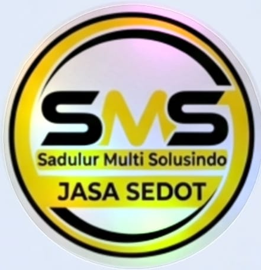

SADULUR MULTI SOLUSINDO"Membangun kepercayaan bersama, teliti dalam bekerja, berpengalaman di bidangnya."
We are an environmental management company specializing in cleaning services, pipeline repair, and waste neutralization in accordance with applicable regulations.
Establishing a clean, comfortable, and safe environment protected from domestic, industrial, and other types of waste.
Becoming the premier company in Cianjur by delivering mutual value and building lasting trust with our customers.
We embrace creativity and new ideas to stay ahead of the curve, uphold the highest standards of honesty and transparency, strive for superior quality in everything we do, and focus on understanding and exceeding client expectations.
SMS walks alongside customers, builds mutual trust, strengthens good relationships, and helps empower a clean and comfortable environment.
Pengurasan septic tank rumah dengan proses bersih dan tanpa bau menyengat.
Penanganan limbah cair industri sesuai regulasi lingkungan yang berlaku.
Diagnosa dan perbaikan saluran sanitasi yang tersumbat atau bermasalah.
Perawatan berkala agar saluran sanitasi tetap lancar dan optimal.